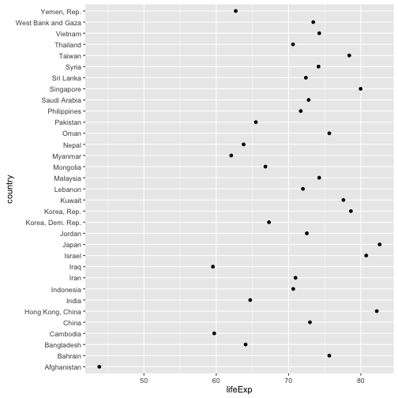
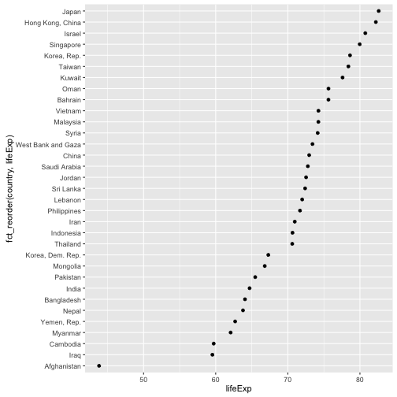
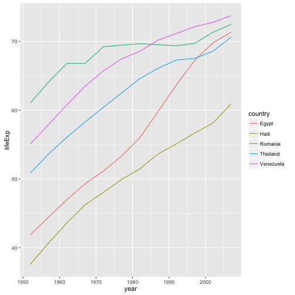
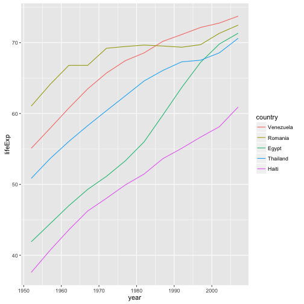

데이터 과학
요인자료형 달인 - STAT545
학습 목표
- 범주형 자료형의 특성과 핵심개념을 이해한다.
forcats팩키지를 활용하여 요인자료형 달인이 된다.
요인 자료형 1
요인(factor) 자료형은 범주형 데이터를 R에서 저장하는 자료형이다. 범주가 취할 수 있는 값을 수준(level) 이라고 부른다. gapminder 데이터셋에서 continent 대륙 변수가 취할 수 있는 값은 “Africa”, “Americas” 등이고 눈으로 사람이 확인하는 값이다. 일반적으로 수준은 사람이 읽을 수 있는 문자열로 표현되고, “male/female”, “control/treated”를 예로 들 수 있다. 절대로 잊지 말아야 되는 사실은 R에서는 정수 1,2,3… 으로 저장된다는 점이다.
요인형의 야누스적인 특성으로 말미암아 여러가지 불미스런 사건을 많이 일으키기도 하지만 필요악으로, 단점보다 훨씬 장점이 더 많다. 특히 모형개발이나 그래프를 생성할 때, 요인은 항상 따라다니고 잘 다뤄야 하는 필수적인 자료형이 요인형이다.
가장 최악의 요인형은 탐지되지 않는 요인이다. 문자형이라고 생각했던 변수가 실제로 컴퓨터 R은 요인형(정수 숫자형)으로 이해하고 있다는 점이다. 그럼 탐지되지 않는 요인(stealth factor)은 어디서 나온 것일까? Base R은 문자형 변수를 요인형으로 자동 변환하는데 데이터를 불러 읽어 들일 때 read.table() 함수와 친구들이 그런 특성을 기본디폴트 설정으로 갖는다. 이런 동작을 멈추게 하려면 stringsAsFactors = FALSE 인자를 명시적으로 넣어야 한다. tidyverse 팩키지를 사용하면 그런 걱정은 사라진다. readr::read_csv(), readr::read_tsv() 함수를 사용해서 데이터를 불러 읽어오든지, 데이터 테이블 생성할 때 data.frame() 대신 tibble::tibble()을 사용한다.
요인형과 문자형에 대한 역사적 고찰과 의미
- stringsAsFactors: An unauthorized biography, Roger Peng
- stringsAsFactors =
, Thomas Lumley
forcats 팩키지 불러오기
tidyverse의 핵심 팩키지가 아니라서 install.packages("tidyverse") 명령어로 설치하고 library(forcats) 명령어로 적재시켜야 한다. fct_ 로 핵심함수명이 시작된다.
suppressMessages(library(tidyverse))Warning: package 'tidyverse' was built under R version 3.2.5
Warning: package 'tibble' was built under R version 3.2.5
Warning: package 'tidyr' was built under R version 3.2.5
Warning: package 'readr' was built under R version 3.2.5
Warning: package 'purrr' was built under R version 3.2.5
suppressMessages(library(forcats))Warning: package 'forcats' was built under R version 3.2.5
suppressMessages(library(gapminder))요인(factor) 살펴보기
먼저 요인형 변수에 담긴 정보를 확인하는데 levels, nlevels 함수를 통해 수준정보를 확인한다.
gapminder# A tibble: 1,704 × 6
country continent year lifeExp pop gdpPercap
<fctr> <fctr> <int> <dbl> <int> <dbl>
1 Afghanistan Asia 1952 28.801 8425333 779.4453
2 Afghanistan Asia 1957 30.332 9240934 820.8530
3 Afghanistan Asia 1962 31.997 10267083 853.1007
4 Afghanistan Asia 1967 34.020 11537966 836.1971
5 Afghanistan Asia 1972 36.088 13079460 739.9811
6 Afghanistan Asia 1977 38.438 14880372 786.1134
7 Afghanistan Asia 1982 39.854 12881816 978.0114
8 Afghanistan Asia 1987 40.822 13867957 852.3959
9 Afghanistan Asia 1992 41.674 16317921 649.3414
10 Afghanistan Asia 1997 41.763 22227415 635.3414
# ... with 1,694 more rows
str(gapminder)Classes 'tbl_df', 'tbl' and 'data.frame': 1704 obs. of 6 variables:
$ country : Factor w/ 142 levels "Afghanistan",..: 1 1 1 1 1 1 1 1 1 1 ...
$ continent: Factor w/ 5 levels "Africa","Americas",..: 3 3 3 3 3 3 3 3 3 3 ...
$ year : int 1952 1957 1962 1967 1972 1977 1982 1987 1992 1997 ...
$ lifeExp : num 28.8 30.3 32 34 36.1 ...
$ pop : int 8425333 9240934 10267083 11537966 13079460 14880372 12881816 13867957 16317921 22227415 ...
$ gdpPercap: num 779 821 853 836 740 ...
str(gapminder$continent) Factor w/ 5 levels "Africa","Americas",..: 3 3 3 3 3 3 3 3 3 3 ...
levels(gapminder$continent)[1] "Africa" "Americas" "Asia" "Europe" "Oceania"
nlevels(gapminder$continent)[1] 5
class(gapminder$continent)[1] "factor"
summary(gapminder$continent) Africa Americas Asia Europe Oceania
624 300 396 360 24
dplyr 팩키지 count() 함수를 사용해서 유사한 결과를 도출할 수도 있고, forcats 팩키지 fct_count() 함수를 사용해서도 동일한 결과를 얻을 수 있다.
gapminder %>%
count(continent)# A tibble: 5 × 2
continent n
<fctr> <int>
1 Africa 624
2 Americas 300
3 Asia 396
4 Europe 360
5 Oceania 24
fct_count(gapminder$continent)# A tibble: 5 × 2
f n
<fctr> <int>
1 Africa 624
2 Americas 300
3 Asia 396
4 Europe 360
5 Oceania 24
사용되지 않는 수준(level) 제거
특정 요인수준에 대응되는 관측점 혹은 행을 제거하게 되면, 문제가 발생된다. 즉, 요인형 변수에 수준이 여전히 남아있게 되어, 요인형 변수에 대한 그래프를 도식화하게 되면 그래프에 자동으로 변수에 정의된 수준이 그대로 저장되어 있어 범례에 수준만 가득찬 그래프도 흔히 목도하게 된다.
h_countries <- c("Egypt", "Haiti", "Romania", "Thailand", "Venezuela")
h_gap <- gapminder %>%
filter(country %in% h_countries)
nlevels(h_gap$country)[1] 142
h_gap 데이터프레임에 5개국만 포함되어 있지만, gapminder 원 데이터프레임에서 상속받은 전체 142개 수준이 끌려온다.
이런 경우 사용되지 않는 수준을 제거해야 되는데 사용되는 함수는 droplevels()다. forcats 팩키지에 대응되는 함수는 fct_drop() 이다.
h_gap_dropped <- h_gap %>%
droplevels()
nlevels(h_gap_dropped$country)[1] 5
h_gap$country %>%
fct_drop() %>%
levels()[1] "Egypt" "Haiti" "Romania" "Thailand" "Venezuela"
수준(level) 순서 변경
기본디폴트 설정으로 요인수준은 알파벳순으로 정렬된다. 수준(level)을 정렬하는 기준이 다음과 같이 제시된다.
- 빈도수: 가장 흔한 첫번째 수준, 두번째 흔한 수준, …
- 다른 변수: 다른 변수의 요약통계량을 활용해서 요인수준을 정렬한다. 예를 들어, 기대수명(life expectancy) 기준으로
gapminder국가를 정렬.
먼저, 빈도수를 기준으로 오름차순, 내림차순으로 대륙(continent)을 정렬한다. 막대그래프(barplot)를 사용해서 표와 그래프를 생성한다.
gapminder$continent %>%
levels()[1] "Africa" "Americas" "Asia" "Europe" "Oceania"
gapminder$continent %>%
fct_infreq() %>%
levels() %>% head()[1] "Africa" "Asia" "Europe" "Americas" "Oceania"
gapminder$continent %>%
fct_infreq() %>%
fct_rev() %>%
levels() %>% head()[1] "Oceania" "Americas" "Europe" "Asia" "Africa"
또다른 변수를 활용해서 country를 앞뒤로 정렬해보자. 보통 정렬에 사용되는 변수는 정량적으로 그룹별 요약통계량을 계산해서 요인수준을 정렬한다. 요인이 집단으로 묶는 변수가 되고, 기본디폴트 요약 함수는 median()이지만 필요에 따라 정렬에 활용한다.
기대수명에 따라 국가를 정렬한다.
fct_reorder(gapminder$country, gapminder$lifeExp) %>%
levels() %>% head()[1] "Sierra Leone" "Guinea-Bissau" "Afghanistan" "Angola"
[5] "Somalia" "Guinea"
최소 기대수명에 따라 국가를 정렬한다.
fct_reorder(gapminder$country, gapminder$lifeExp, min) %>%
levels() %>% head()[1] "Rwanda" "Afghanistan" "Gambia" "Angola"
[5] "Sierra Leone" "Cambodia"
역순으로 기대수명에 따라 국가를 정렬한다.
fct_reorder(gapminder$country, gapminder$lifeExp, .desc = TRUE) %>%
levels() %>% head()[1] "Iceland" "Japan" "Sweden" "Switzerland" "Netherlands"
[6] "Norway"
요인수준을 정렬해야 하는 이유는 그래프를 훨씬 가독성 좋게 만든다. 요인변수를 x 혹은 y 축에 매핑시킬 경우, 거의 항상 또다른 매핑되는 변수를 기준으로 재정렬시켜야 한다.
gap_asia_2007 <- gapminder %>% filter(year == 2007, continent == "Asia")
ggplot(gap_asia_2007, aes(x = lifeExp, y = country)) + geom_point()
ggplot(gap_asia_2007, aes(x = lifeExp, y = fct_reorder(country, lifeExp))) +
geom_point()
fct_reorder2() 함수를 사용해서 요인변수 수준과 선그래프 색상을 맞출 수 있다. 또한 데이터와 범례도 맞출 수 있다.
h_countries <- c("Egypt", "Haiti", "Romania", "Thailand", "Venezuela")
h_gap <- gapminder %>%
filter(country %in% h_countries) %>%
droplevels()
ggplot(h_gap, aes(x = year, y = lifeExp, color = country)) +
geom_line()
ggplot(h_gap, aes(x = year, y = lifeExp,
color = fct_reorder2(country, year, lifeExp))) +
geom_line() +
labs(color = "country")
특정 수준순위를 조정
종종 특정 수준의 순위를 조정하고자 하는 경우가 있다. fct_relevel() 함수를 사용한다.
h_gap$country %>% levels()[1] "Egypt" "Haiti" "Romania" "Thailand" "Venezuela"
h_gap$country %>% fct_relevel("Romania", "Haiti") %>% levels()[1] "Romania" "Haiti" "Egypt" "Thailand" "Venezuela"
수준을 다시 정의
범주 수준을 재정의하는 경우도 흔히 있다. 이런 경우 fct_recode() 함수를 사용한다.
i_gap <- gapminder %>%
filter(country %in% c("United States", "Sweden", "Australia")) %>%
droplevels()
i_gap$country %>% levels()[1] "Australia" "Sweden" "United States"
i_gap$country %>%
fct_recode("USA" = "United States", "Oz" = "Australia") %>% levels()[1] "Oz" "Sweden" "USA"